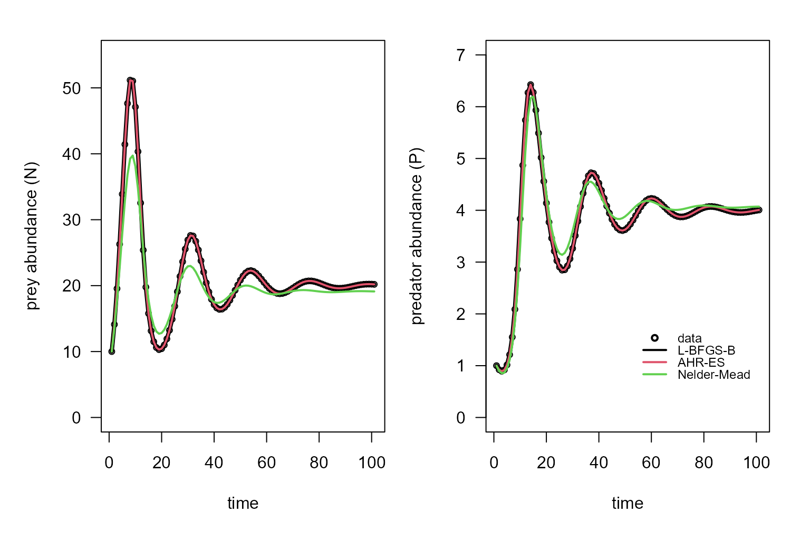

vignettes/v03-parameter_estimation_ODE.Rmd
v03-parameter_estimation_ODE.RmdAs before, we will start by creating a set a parameters that will be used as ‘real’ parameters to simulate some data.
library(calibrar)
set.seed(880820)
path = NULL # NULL to use the current directory
# create the demonstration files
LV = calibrar_demo(path=path, model='PredatorPrey', T=100)
#> Creating observed data list for calibration...
#> Loaded observed data for variables: 'prey', 'predator'.
# get calibration information
setup = calibration_setup(file = LV$setup)
# get observed data
observed = calibration_data(setup=setup, path=LV$path)
#> Creating observed data list for calibration...
#>
#> Loaded observed data for variables: 'prey', 'predator'.
# Defining 'run_model' function
run_model = calibrar:::.PredatorPreyModel
# real parameters
cat("Real parameters used to simulate data\n")
#> Real parameters used to simulate data
print(unlist(LV$par)) # parameters are in a list
#> r l K alpha gamma initial.N initial.P
#> 0.5 0.2 100.0 0.1 0.1 10.0 1.0The run_model will simulate the data, by solving the ODE
system defined by the Lotka-Volterra model:
#> function(par, T) {
#> if(!requireNamespace("deSolve", quietly = TRUE))
#> stop("You need to install the 'deSolve' package.")
#> # par is a list with 'alpha', 'beta' 'gamma', 'sd' and 'mu_ini'.
#> LV = function(t, y, parms, ...) {
#> r = parms$r
#> l = parms$l
#> alpha = parms$alpha
#> gamma = parms$gamma
#> K = parms$K
#> dN = r*y[1]*(1-(y[1]/K)) - alpha*y[1]*y[2]
#> dP = -l*y[2] + gamma*alpha*y[1]*y[2]
#> return(list(c(dN, dP)))
#> }
#> times = seq(0, T)
#> y0 = c(par$initial$N, par$initial$P)
#> sol = deSolve::ode(y=y0, times=times, func=LV, parms=par, method="ode45")
#> out = as.list(as.data.frame(sol[,-1]))
#> names(out) = c("prey", "predator")
#> out$prey[is.na(out$prey)] = 0
#> out$predator[is.na(out$predator)] = 0
#> return(out)
#> }
#> <bytecode: 0x0000029c584783b8>
#> <environment: namespace:calibrar>We will also define the objective function. In this case, we will set two: one that summarize the objective function into a scalar value, and another one that produce two values: one for the fit of the prey and another for the fit of the predator; as some algorithm (notably, AHR-ES) can use this additional information to perform the optimization.
# objective functions
obj = calibration_objFn(model=run_model, setup=setup, observed=observed, T=LV$T, aggregate=TRUE)
lbfgsb1 = calibrate(par=LV$guess, fn=obj, , method='L-BFGS-B', lower=LV$lower, upper=LV$upper, phases=LV$phase)
#> Using optimization method 'L-BFGS-B'.
#> Elapsed time: 3.25s
#> Function value: 5.60587e-07
#> Parameter values: 0.5 0.2 100 0.1 0.1
#>
#> Status: CONVERGENCE: REL_REDUCTION_OF_F <= FACTR*EPSMCH
lbfgsb2 = calibrate(par=LV$guess, fn=obj, lower=LV$lower, upper=LV$upper, phases=LV$phase, method="Rvmmin")
#> Using optimization method 'Rvmmin'.
#> Elapsed time: 3.51s
#> Function value: 5.60575e-07
#> Parameter values: 0.5 0.2 100 0.1 0.1
#>
#> Status: Rvmminb appears to have converged
ahr = calibrate(par=LV$guess, fn=obj, method='AHR-ES', lower=LV$lower, upper=LV$upper, phases=LV$phase)
#> Using optimization method 'AHR-ES'.
#> Elapsed time: 3m 24.2s
#> Function value: 5.60575e-07
#> Parameter values: 0.5 0.2 100 0.1 0.1
#>
#> Status: Stopping criteria reached in 4909 generations.
nm = calibrate(par=LV$guess, fn=obj, phases=LV$phase, method="Nelder-Mead")
#> Using optimization method 'Nelder-Mead'.
#> Elapsed time: 46.74s
#> Function value: 1.41517
#> Parameter values: 0.45 0.275 66.2 0.0788 0.183
#>
#> Status: -
summary(LV, lbfgsb1, lbfgsb2, ahr, nm, show_par = 1:5)
#> method elapsed value fn gr r l K alpha gamma
#> LV data NA 4.96e-07 NA NA 0.50 0.200 100.0 0.1000 0.100
#> lbfgsb1 L-BFGS-B 3.25 5.61e-07 74 74 0.50 0.200 100.0 0.1000 0.100
#> lbfgsb2 Rvmmin 3.51 5.61e-07 132 83 0.50 0.200 100.0 0.1000 0.100
#> ahr AHR-ES 204.21 5.61e-07 39272 0 0.50 0.200 100.0 0.1000 0.100
#> nm Nelder-Mead 46.74 1.42e+00 502 NA 0.45 0.275 66.2 0.0788 0.183
lbfgsb1.pred = predict(lbfgsb1)
lbfgsb2.pred = predict(lbfgsb2)
ahr.pred = predict(ahr)
nm.pred = predict(nm)
methods = c("data", "L-BFGS-B", "AHR-ES", "Nelder-Mead")
par(mfrow=c(1,2), mar=c(4,4,1,1),
oma=c(1,1,1,1))
plot(observed$prey, cex=0.75,
ylab="prey abundance (N)", xlab="time", las=1,
ylim=c(0,55))
lines(lbfgsb1.pred$prey, col=1, lwd=4)
lines(ahr.pred$prey, col=2, lwd=2)
lines(nm.pred$prey, col=3, lwd=2)
plot(observed$predator, cex=0.75,
ylab="predator abundance (P)", xlab="time", las=1,
ylim=c(0,7))
lines(lbfgsb1.pred$predator, col=1, lwd=4)
lines(ahr.pred$predator, col=2, lwd=2)
lines(nm.pred$predator, col=3, lwd=2)
legend(100, 1.8, legend=methods, bty="n", cex=0.75, y.intersp=0.8,
inset=-0.0, xjust=1, pch = c(1, rep(NA,5)), lty=c(0, rep(1,5)),
col=c(1,1:3), lwd=2)
path = NULL # NULL to use the current directory
SIR = calibrar_demo(path=path, model='SIR', T=100)
#> Creating observed data list for calibration...
#> Loaded observed data for variables: 'susceptible', 'infected', 'recovered'.
setup = calibration_setup(file = SIR$setup)
observed = calibration_data(setup=setup, path=SIR$path)
#> Creating observed data list for calibration...
#>
#> Loaded observed data for variables: 'susceptible', 'infected', 'recovered'.
run_model = calibrar:::.SIRModel
run_model
#> function(par, T) {
#> if(!requireNamespace("deSolve", quietly = TRUE))
#> stop("You need to install the 'deSolve' package.")
#> # par is a list with 'alpha', 'beta' 'gamma', 'sd' and 'mu_ini'.
#> SIR = function(t, y, parms, ...) {
#> N = sum(unlist(parms$initial))
#> beta = parms$beta
#> gamma = parms$gamma
#> S = y[1]
#> I = y[2]
#> dS = -beta*S*I/N
#> dI = +beta*S*I/N -gamma*I
#> dR = +gamma*I
#> return(list(c(dS, dI, dR)))
#> }
#> times = seq(0, T)
#> y0 = c(par$initial$S, par$initial$I, par$initial$R)
#> sol = deSolve::ode(y=y0, times=times, func=SIR, parms=par, method="ode45")
#> out = as.list(as.data.frame(sol[,-1]))
#> names(out) = c("susceptible", "infected", "recovered")
#> out$susceptible[is.na(out$susceptible)] = 0
#> out$infected[is.na(out$infected)] = 0
#> out$recovered[is.na(out$recovered)] = 0
#> return(out)
#> }
#> <bytecode: 0x0000029c5a9b0010>
#> <environment: namespace:calibrar>
obj = calibration_objFn(model=run_model, setup=setup, observed=observed, T=SIR$T, aggregate=TRUE)
lbfgsb3 = calibrate(par=SIR$guess, fn=obj, method='LBFGSB3', lower=SIR$lower, upper=SIR$upper, phases=SIR$phase)
#> Using optimization method 'LBFGSB3'.
#> Elapsed time: 8.44s
#> Function value: 2.38128
#> Parameter values: 0.408 0.215
#>
#> Status: CONVERGENCE: REL_REDUCTION_OF_F_<=_FACTR*EPSMCH
lbfgsb2 = calibrate(par=SIR$guess, fn=obj, method='Rvmmin', lower=SIR$lower, upper=SIR$upper, phases=SIR$phase)
#> Using optimization method 'Rvmmin'.
#> Elapsed time: 0.30s
#> Function value: 7.56969e-13
#> Parameter values: 0.4 0.2
#>
#> Status: Rvmminb appears to have converged
ahr = calibrate(par=SIR$guess, fn=obj, method='AHR-ES', lower=SIR$lower, upper=SIR$upper, phases=SIR$phase)
#> Using optimization method 'AHR-ES'.
#> Elapsed time: 27.68s
#> Function value: 9.62938e-22
#> Parameter values: 0.4 0.2
#>
#> Status: Stopping criteria reached in 1031 generations.
cg = calibrate(par=SIR$guess, fn=obj, method='Rcgmin', phases=SIR$phase)
#> Using optimization method 'Rcgmin'.
#> Elapsed time: 2m 16.7s
#> Function value: 1.42228e-14
#> Parameter values: 0.4 0.2
#>
#> Status: Too many function evaluations (> 866)
nm = calibrate(par=SIR$guess, fn=obj, method='Nelder-Mead', phases=SIR$phase)
#> Using optimization method 'Nelder-Mead'.
#> Elapsed time: 0.28s
#> Function value: 2.5122e-05
#> Parameter values: 0.4 0.2
#>
#> Status: -
summary(SIR, lbfgsb2, lbfgsb3, ahr, cg, nm, show_par = 1:2)
#> method elapsed value fn gr beta gamma
#> SIR data NA 4.45e-28 NA NA 0.400 0.200
#> lbfgsb2 Rvmmin 0.301 7.57e-13 24 16 0.400 0.200
#> lbfgsb3 LBFGSB3 8.442 2.38e+00 86 86 0.408 0.215
#> ahr AHR-ES 27.683 9.63e-22 6186 0 0.400 0.200
#> cg Rcgmin 136.738 1.42e-14 868 114 0.400 0.200
#> nm Nelder-Mead 0.284 2.51e-05 73 NA 0.400 0.200